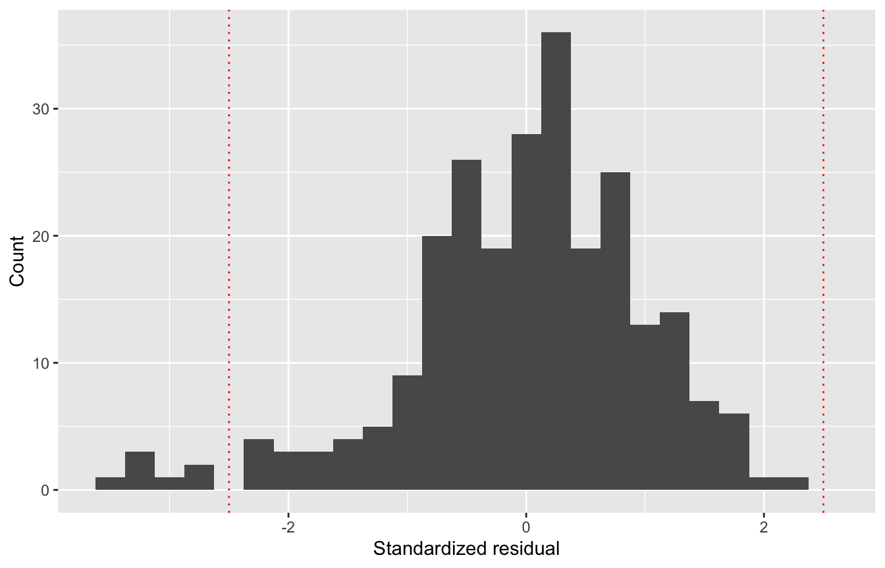
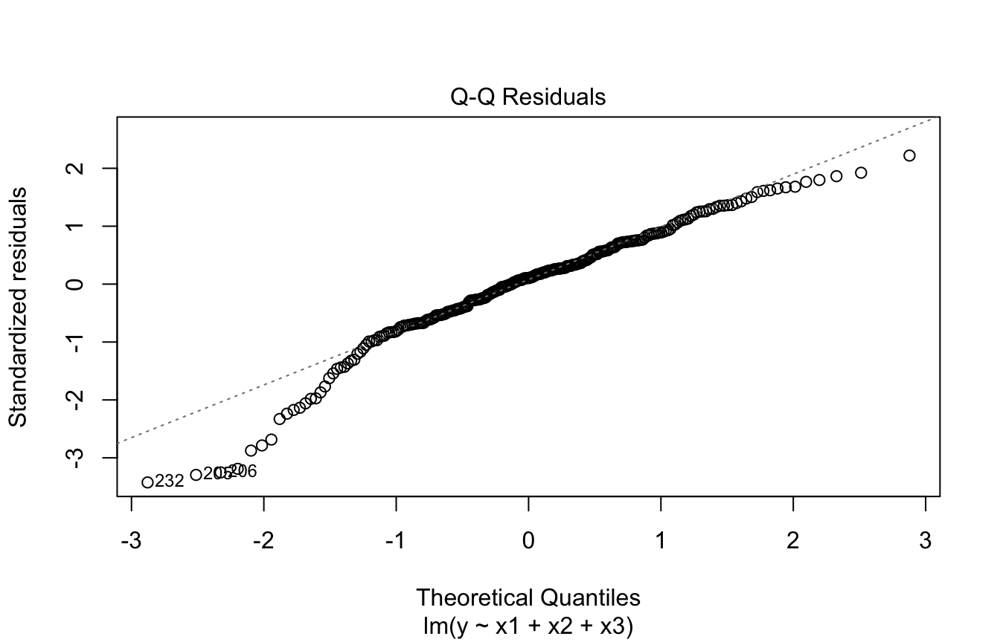
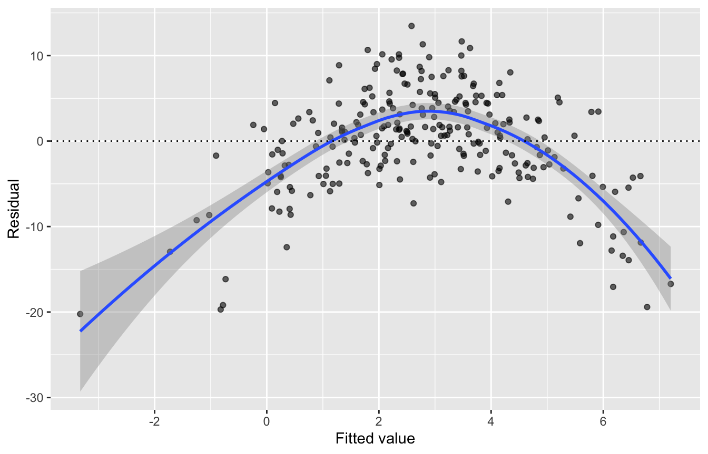
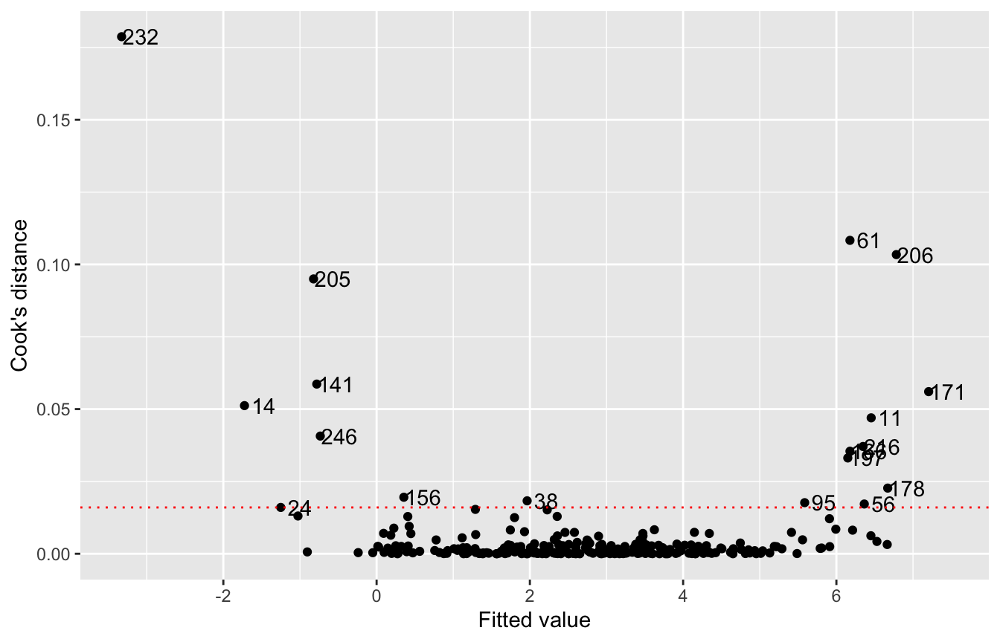

library(tidyverse)
library(haven)
library(psych)
library(broom)
library(lmtest)
library(car)
library(modelsummary)5 Checking Model Assumptions
Every statistical model rests on assumptions. When they are badly violated, standard errors, p-values, and even coefficients can be misleading. In this chapter, we work through a sequence of checks for a multiple regression model:
- Normality of residuals
- Homoskedasticity and linearity
- Influential observations
- Multicollinearity
We then use bootstrapping as one way to get more trustworthy inferences when some assumptions do not hold. Many of these checks also apply to the models in later chapters.
5.1 The data
Note: These are teaching data with an outcome y and three predictors (x1 to x3). They were built to violate several assumptions, so that we can see what problems look like.
zap_labels() removes the Stata labels, which we do not need here.
skew1 <- read_dta("data/skew1.dta") |>
zap_labels()
describe(skew1)5.2 The model to check
Assumption checks are done on a fitted model, so the first step is to settle on the model you plan to report:
model1 <- lm(y ~ x1 + x2 + x3, data = skew1)
summary(model1)
Call:
lm(formula = y ~ x1 + x2 + x3, data = skew1)
Residuals:
Min 1Q Median 3Q Max
-20.2324 -3.2209 0.6368 4.1809 13.4686
Coefficients:
Estimate Std. Error t value Pr(>|t|)
(Intercept) -5.0601 7.8212 -0.647 0.518
x1 0.7425 0.1614 4.601 6.74e-06 ***
x2 -0.7812 1.7776 -0.439 0.661
x3 1.2894 1.5421 0.836 0.404
---
Signif. codes: 0 '***' 0.001 '**' 0.01 '*' 0.05 '.' 0.1 ' ' 1
Residual standard error: 6.085 on 246 degrees of freedom
Multiple R-squared: 0.0811, Adjusted R-squared: 0.0699
F-statistic: 7.238 on 3 and 246 DF, p-value: 0.0001131augment() from the broom package adds diagnostic values to each row of the data: fitted values (.fitted), residuals (.resid), standardized residuals (.std.resid), and Cook’s distance (.cooksd). We also add an ID number so we can identify individual cases later.
diagnostics <- augment(model1) |>
mutate(id = row_number())
glimpse(diagnostics)Rows: 250
Columns: 11
$ y <dbl> 3.52, 5.17, -3.00, 2.08, 10.45, 8.22, 0.99, 5.14, 11.04, 0.…
$ x1 <dbl> 0.43, 2.46, -0.09, 5.99, 2.82, -0.05, 3.22, 3.85, 3.44, 1.2…
$ x2 <dbl> 11.012794, 10.521316, 10.148856, 9.138934, 9.635400, 10.430…
$ x3 <dbl> 11.612148, 11.654059, 10.942583, 10.113733, 10.417729, 11.1…
$ .fitted <dbl> 1.629127, 3.574360, 1.054567, 5.289135, 2.939575, 1.116578,…
$ .resid <dbl> 1.89087332, 1.59563982, -4.05456701, -3.20913506, 7.5104247…
$ .hat <dbl> 0.034030296, 0.010170061, 0.010185926, 0.023593675, 0.00836…
$ .sigma <dbl> 6.096286, 6.096664, 6.091963, 6.093994, 6.078457, 6.080343,…
$ .cooksd <dbl> 8.803705e-04, 1.784325e-04, 1.153942e-03, 1.720728e-03, 3.2…
$ .std.resid <dbl> 0.316163414, 0.263563643, -0.669728223, -0.533707902, 1.239…
$ id <int> 1, 2, 3, 4, 5, 6, 7, 8, 9, 10, 11, 12, 13, 14, 15, 16, 17, …5.3 Step 1: Normality of residuals
Regression assumes that the residuals, not the variables themselves, are normally distributed. A histogram of standardized residuals is a good first look. The dotted lines mark ±2.5, beyond which few residuals should fall.
ggplot(diagnostics, aes(x = .std.resid)) +
geom_histogram(binwidth = 0.25) +
geom_vline(xintercept = c(-2.5, 2.5), linetype = "dotted", color = "red") +
labs(x = "Standardized residual", y = "Count")
A Q-Q plot compares the residuals to a normal distribution. If the residuals are normal, the points fall along the diagonal line.
plot(model1, which = 2)
The residuals have a long left tail, with several large negative values. The Shapiro-Wilk test supports what the plots suggest:
shapiro.test(diagnostics$.resid)
Shapiro-Wilk normality test
data: diagnostics$.resid
W = 0.96122, p-value = 2.838e-06The null hypothesis of the Shapiro-Wilk test is that the residuals are normal. Here, p < .001, so we reject it. Keep in mind that in large samples, this test can flag departures from normality too small to matter. Use it alongside the plots, not in place of them.
5.4 Step 2: Homoskedasticity and linearity
A residuals-versus-fitted (RVF) plot checks two assumptions at once. If the variance of the residuals is constant (homoskedasticity), the points form a band of even width. If the relationship is linear, the smoothed line stays flat near zero.
ggplot(diagnostics, aes(x = .fitted, y = .resid)) +
geom_point(alpha = 0.6) +
geom_smooth(method = "loess") +
geom_hline(yintercept = 0, linetype = "dotted") +
labs(x = "Fitted value", y = "Residual")
The smoothed line bends into an inverted U. The residuals are mostly positive in the middle of the fitted values and mostly negative at both ends. This suggests the model is missing a nonlinear relationship. It may also explain the long left tail we saw in Step 1. Two formal tests check each assumption separately.
The Breusch-Pagan test checks for heteroskedasticity. Its null hypothesis is constant variance:
bptest(model1)
studentized Breusch-Pagan test
data: model1
BP = 1.3423, df = 3, p-value = 0.7191The Ramsey RESET test checks functional form by asking whether squared terms of the predictors improve the model. Its null hypothesis is that the linear specification is adequate:
resettest(model1, power = 2, type = "regressor")
RESET test
data: model1
RESET = 92.185, df1 = 3, df2 = 243, p-value < 2.2e-16The Breusch-Pagan test is not significant, but the RESET test is. Taken together with the plot, these results suggest the main problem is functional form: at least one predictor may have a nonlinear relationship with y.
5.5 Step 3: Influential observations
Cook’s distance measures how much the regression results would change if a single case were removed. Two common rules of thumb flag cases with a Cook’s distance greater than 1, or greater than 4/n.
cutoff <- 4 / nrow(diagnostics)
ggplot(diagnostics, aes(x = .fitted, y = .cooksd, label = id)) +
geom_point() +
geom_text(data = filter(diagnostics, .cooksd > cutoff), nudge_x = 0.25) +
geom_hline(yintercept = cutoff, linetype = "dotted", color = "red") +
labs(x = "Fitted value", y = "Cook's distance")
No case exceeds 1, but several exceed 4/n. A flagged case should not be deleted automatically. Instead, we run a sensitivity analysis: we refit the model without the flagged cases and see whether the conclusions change.
# Remove the few cases with the largest Cook's distances
model_trim_large <- lm(y ~ x1 + x2 + x3,
data = filter(diagnostics, .cooksd < 0.10))
# Remove every case above 4/n
model_trim_all <- lm(y ~ x1 + x2 + x3,
data = filter(diagnostics, .cooksd < cutoff))
modelsummary(
list(
"All cases" = model1,
"Largest removed" = model_trim_large,
"All above 4/n removed" = model_trim_all
),
stars = TRUE,
gof_map = c("nobs", "r.squared")
)| All cases | Largest removed | All above 4/n removed | |
|---|---|---|---|
| + p < 0.1, * p < 0.05, ** p < 0.01, *** p < 0.001 | |||
| (Intercept) | -5.060 | 1.949 | -4.102 |
| (7.821) | (7.459) | (6.213) | |
| x1 | 0.742*** | 0.784*** | 0.851*** |
| (0.161) | (0.159) | (0.148) | |
| x2 | -0.781 | -0.107 | -0.149 |
| (1.778) | (1.681) | (1.419) | |
| x3 | 1.289 | 0.051 | 0.701 |
| (1.542) | (1.471) | (1.258) | |
| Num.Obs. | 250 | 247 | 232 |
| R2 | 0.081 | 0.092 | 0.126 |
Across all three models, x1 is the only significant predictor, and its coefficient changes only slightly. This suggests the main conclusion is not driven by a handful of influential cases. If the conclusions had changed, we would report both sets of results and investigate the flagged cases further.
5.6 Step 4: Multicollinearity
When predictors are highly correlated with each other, their standard errors become inflated, and it is hard to separate their effects. The variance inflation factor (VIF) measures this for each predictor:
vif(model1) x1 x2 x3
1.014198 5.358846 5.359217 A VIF of 1 indicates no collinearity. Common cutoffs for concern are 5 or 10. Here, x2 and x3 have VIFs just above 5. This suggests they share a good deal of variance, which may partly explain why neither one is significant.
5.7 Bootstrapping
When the residuals are not normal, the usual standard errors and confidence intervals may not be accurate. Bootstrapping is one remedy. It resamples the data with replacement many times, refits the model each time, and uses the spread of the resulting estimates to build confidence intervals. These intervals do not rely on the normality assumption.
Boot() from the car package bootstraps a fitted model. Setting a seed makes the results reproducible.
set.seed(663)
model1_boot <- Boot(model1, R = 1000)
confint(model1_boot, type = "perc")Bootstrap percent confidence intervals
2.5 % 97.5 %
(Intercept) -19.9224205 9.688007
x1 0.2685284 1.257396
x2 -4.1067383 2.545876
x3 -1.9208202 4.400462Compare these percentile intervals to the standard ones:
confint(model1) 2.5 % 97.5 %
(Intercept) -20.4652124 10.345033
x1 0.4246307 1.060361
x2 -4.2825133 2.720178
x3 -1.7480595 4.326873The bootstrapped interval for x1 is somewhat wider, but it still excludes zero. Thus, the conclusion about x1 appears robust to the non-normal residuals.
Bootstrapping helps with non-normality, but it does not fix a misspecified model. The RESET result in Step 2 would still need attention, for example by testing a squared term for one or more predictors.